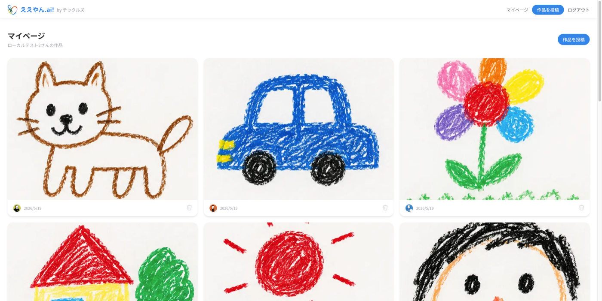
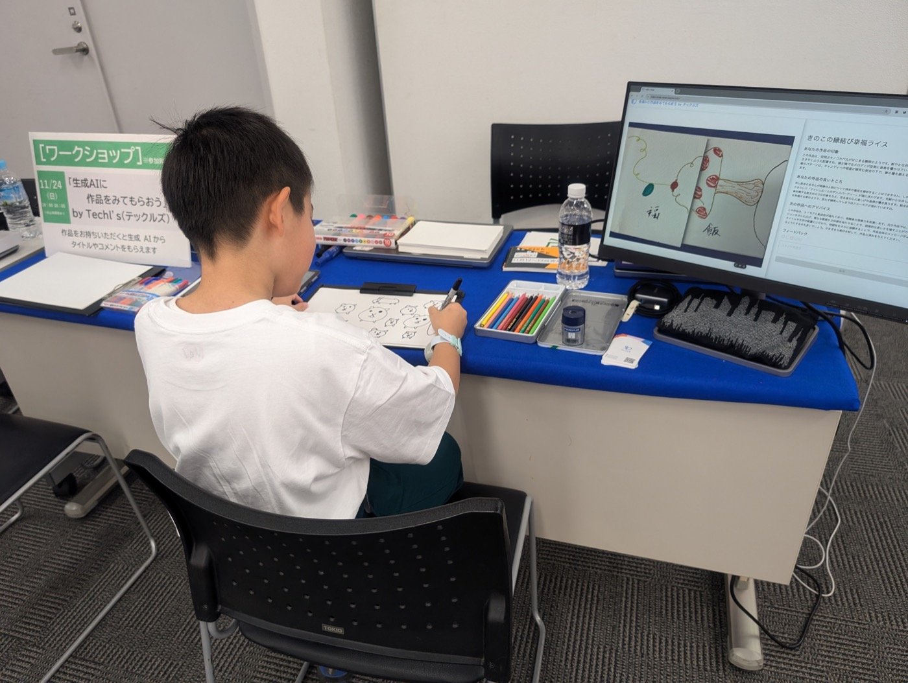

福祉 デザイン テクノロジー
創造性を、もっと自由に。
私たちテックルズは、福祉業界に関心を持つデザイナーとエンジニアのチームです
AI
等のテクノロジーを用いて、障がいを持つ方々が創造性や表現力を発揮できる環境作りを目指しています。
About
共創から、最適解を見つける。
ユーザー調査とプロトタイピングを繰り返し、当事者やまわりの人たちとの共創を通じて、 ほんとうに必要とされる解決策を見つけていきます。
-
リサーチ
福祉の現場に足を運び、当事者の声から課題を見つけます。
-
プロトタイピング
小さくつくって試す。手を動かしながらアイデアを磨きます。
-
共創
デザイナーとエンジニア、そして当事者と一緒につくります。
Works
つくったもの
Activities
活動
アプリづくりのほかにも、ワークショップなど、 創造性に出会える場づくりに取り組んでいます。

ワークショップ
テクノロジーを使って一緒に手を動かす、参加型の場をひらいています。 活動のようすは note でも発信しています。
Links
つながる
最新の活動や告知は、こちらから。